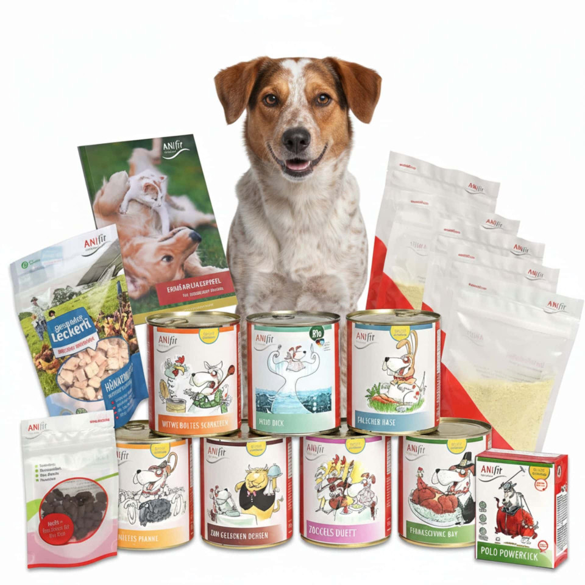

ANIfit Hunde-Schnupperpaket im Test: Lohnt sich das Probierpaket?

Ein neues Nassfutter für den Hund zu finden, ist oft ein Geduldsspiel: Manche Sorten werden verschmäht, andere vertragen sich nicht mit dem empfindlichen Magen. Genau hier setzt das ANIfit Hunde-Schnupperpaket an. Wir zeigen, was drin ist, für wen es sich lohnt und worauf du beim Ausprobieren achten solltest.
Was ist das ANIfit Hunde-Schnupperpaket?
Das Schnupperpaket ist ein Probierset des schwedischen Herstellers ANIfit (Provital GmbH), mit dem Hundehalter mehrere Nassfutter-Sorten gleichzeitig testen können, statt gleich eine ganze Palette einer einzigen Sorte kaufen zu müssen. Das Paket ist in drei Größen erhältlich — 200 g, 400 g und 810 g — und richtet sich vor allem an Hunde, die neu auf Nassfutter umgestellt werden, oder an Halter, die einfach herausfinden möchten, welche Sorte ihrem Hund am besten schmeckt.
Das ist im 810-g-Schnupperpaket enthalten
Die größte Variante des Pakets bietet gleich acht verschiedene Nassfutter-Sorten sowie ergänzende Snacks und Zubehör:
- Gockels Duett – mit Hähnchen
- Falscher Hase – mit Rind, Huhn, Kaninchen und Gemüse
- Schäfers Pfanne – mit Lamm, Huhn, Rind, Reis und Karotte
- Zum Goldenen Ochsen – mit Rind und Huhn
- Witwe Boltes Schrecken – mit Huhn, Rind und Lachs
- Thanksgiving Day – mit Truthahn
- Bio Moby Dick – Fischvariante in Bio-Qualität
- Polo Powerkick – mit Rind und Huhn im Tetra-Pak-Format
Dazu kommen fünf Probepackungen Kartoffelflocken als Sättigungsbeilage, ein Probierbeutel Picco Train Fischsnacks, eine Probe gefriergetrockneter Hühnerbrust sowie ein kleiner Ernährungsratgeber und ein Schnappverschluss-Deckel für die geöffneten Dosen.
Was das Paket besonders macht
ANIfit wirbt bei allen Rezepturen mit einem hohen Frischfleischanteil und einer möglichst naturbelassenen Herstellung:
- Ohne künstliche Konservierungsstoffe
- Ohne künstliche Farb- und Aromastoffe
- Herstellung in Schweden nach ISO-9001-Standard
- Geeignet für alle Lebensphasen
- Ohne Tierversuche
Für wen eignet sich das Schnupperpaket?
Ein Probierpaket mit mehreren Sorten ist vor allem dann sinnvoll, wenn du:
- deinen Hund neu auf Nassfutter umstellen möchtest und noch nicht weißt, welche Fleischsorte er bevorzugt
- einen wählerischen Hund hast, der auf einzelne Sorten mit Futterverweigerung reagiert
- abwechslungsreich füttern und mehrere Proteinquellen im Wechsel anbieten möchtest
- vor einer größeren Bestellung erst prüfen willst, ob dein Hund das Futter überhaupt verträgt
Gerade bei Futterumstellungen empfehlen wir, neue Sorten langsam unterzumischen und den Kot deines Hundes in den ersten Tagen zu beobachten, um Unverträglichkeiten frühzeitig zu erkennen.
Fazit
Das ANIfit Hunde-Schnupperpaket ist eine risikoarme Möglichkeit, mehrere hochwertige Nassfutter-Sorten auf einmal zu testen, statt teure Fehlkäufe in großen Gebinden zu riskieren. Wer noch auf der Suche nach dem passenden Futter für seinen Hund ist, findet mit der 810-g-Variante gleich acht Sorten plus Zubehör zum Kennenlernen. Bei bestehenden Erkrankungen oder Futterunverträglichkeiten empfehlen wir vorab immer die Rücksprache mit einer Tierärztin oder einem Tierarzt.
ANIfit Hunde-Schnupperpaket direkt entdecken
Teste die verschiedenen ANIfit Sorten selbst und finde heraus, welches Futter deinem Hund am besten schmeckt.